Olaf is a landmark based acoustic fingerprinting system. It stands out for three reasons: Olaf is...
Here Olaf runs on an ESP32 microcontroller.
The microcontroller is embedded in a smart costume and is battery powered.
Lights in the costume only react to a single, preditermined song.
Only when that song is played: the costume lights up.
When the music stops, the match is kept for a while to support interruptions.
After a while the lights stop...
....until the song starts again.
Olaf has a CLI interface to store and query audio.
Audio is processed at speeds over 1000xrealtime.
